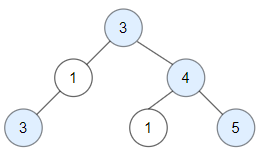
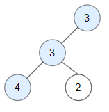

| Category | Difficulty | Likes | Dislikes |
|---|---|---|---|
| Algorithms | Medium | 6268 | 209 |
tree | depth-first-search | breadth-first-search | binary-tree
amazon | facebook | microsoft | google | docusign | goldman-sachs | josh-technology
Given a binary tree root, a node X in the tree is named good if in the path from root to X there are no nodes with a value greater than X.
Return the number of good nodes in the binary tree.
Example 1:

Input: root = [3,1,4,3,null,1,5]
Output: 4
Explanation: Nodes in blue are good.
Root Node (3) is always a good node.
Node 4 -> (3,4) is the maximum value in the path starting from the root.
Node 5 -> (3,4,5) is the maximum value in the path
Node 3 -> (3,1,3) is the maximum value in the path.Example 2:

Input: root = [3,3,null,4,2]
Output: 3
Explanation: Node 2 -> (3, 3, 2) is not good, because "3" is higher than it.Example 3:
Input: root = [1]
Output: 1
Explanation: Root is considered as good.
Constraints:
[1, 10^5].[-10^4, 10^4].